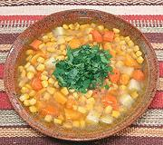

|
Corn & Vegetable SoupArgentina - Sopa de Choclos | ||||
| Makes: Effort: Sched: DoAhead: |
10 cups ** 1-1/2 hrs Yes |
What? A vegetarian dish from Argentina? Yes, and from a Spanish language Argentine cookbook published in Argentina. It's also pretty good eating, for light lunch or soup course. | |||
|
4 8 12 5 7 2 1/4 5 1/2 1 |
cob oz oz oz oz T c c T t |
Corn (1) Squash, hard (2) Potatoes (3) Carrots Onions Parsley, flat Olive Oil Water (4) Salt Pepper, black |
Prep - (30 min )
|